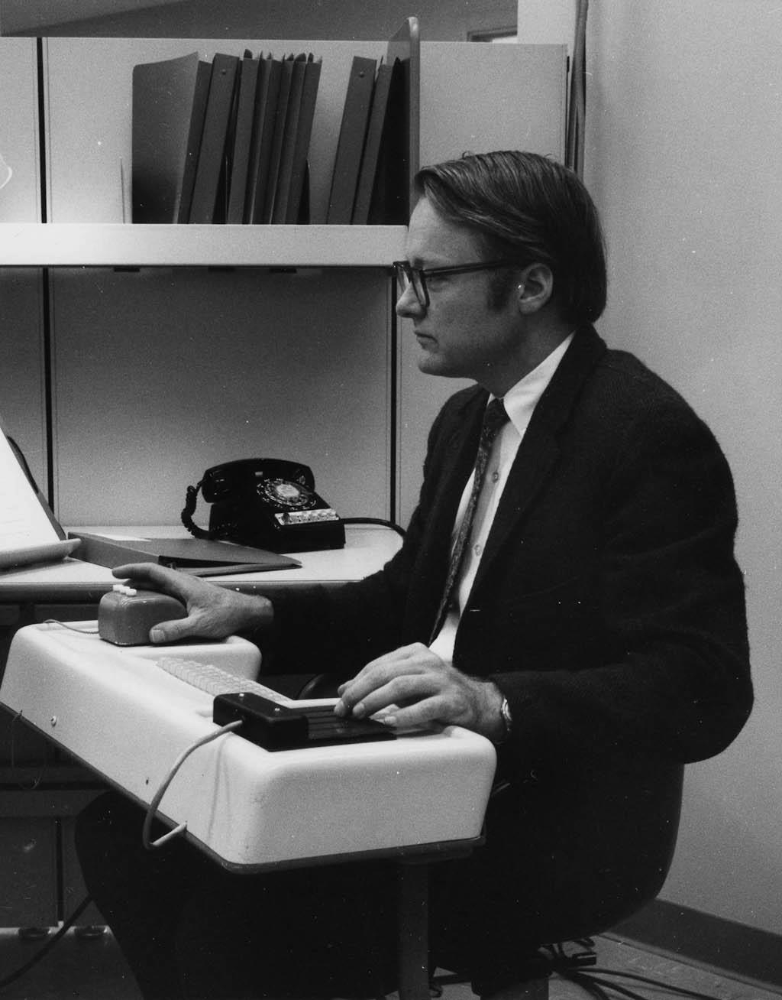
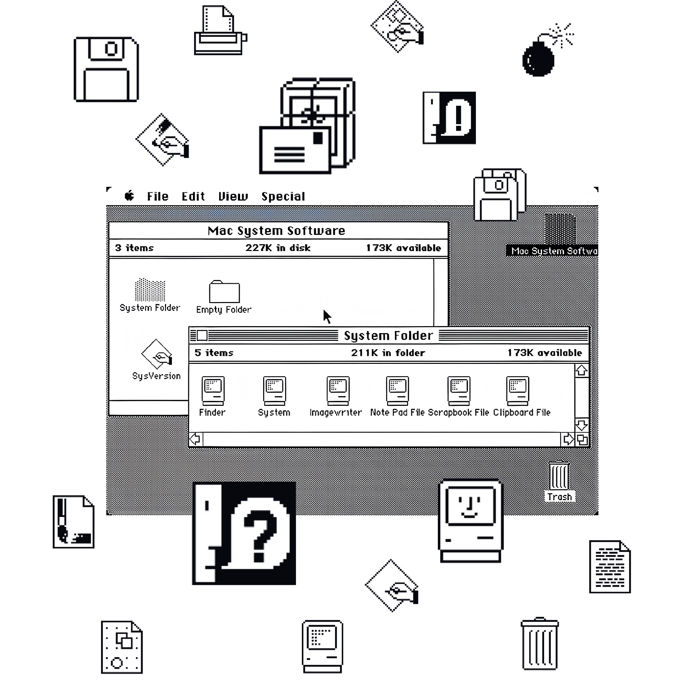
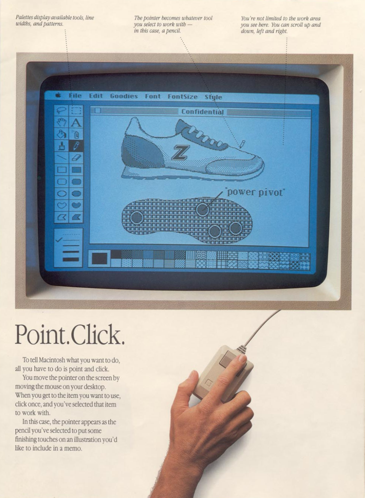
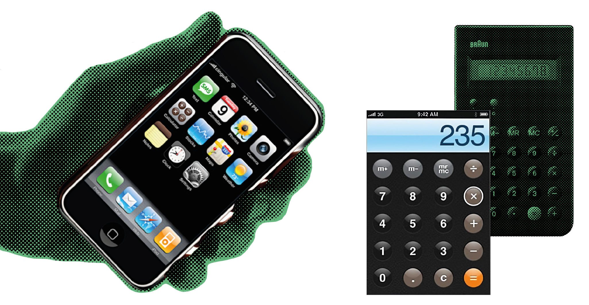
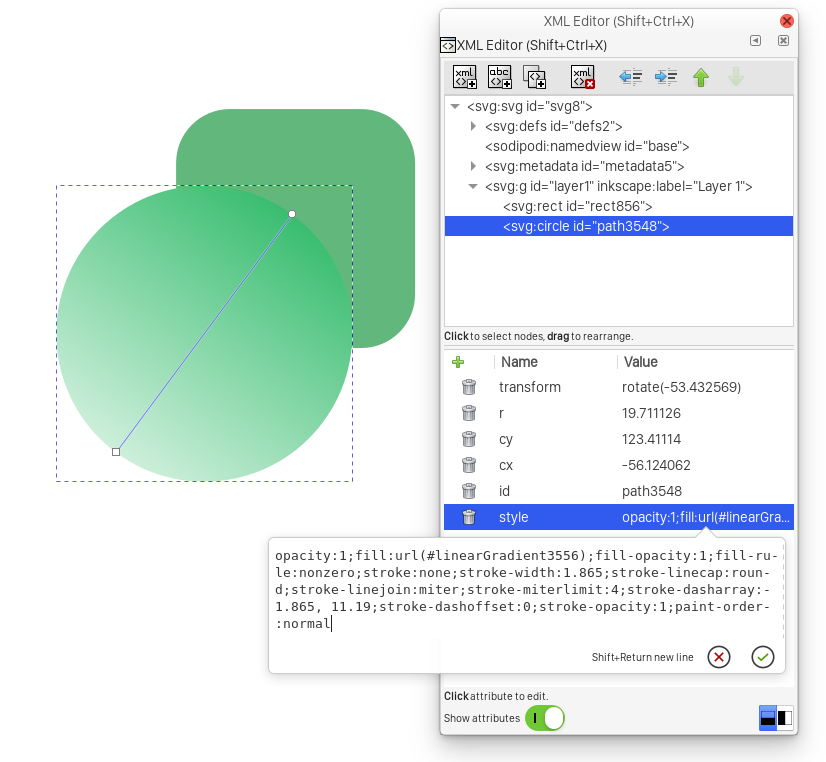

La simplicité et l’écran
dessous et travers d'une pratique banalisée
DNSEP Design mention Média
Sous la direction de Damien Baïs
2021
Introduction
S’il y a bien un terme que l’industrie
numérique revendique
systématiquement,
c’est celui-ci : simplicité.
Alors qu’en 2007 Steve Jobs annonçait l’iPhone, un mot était récurent tout au long de sa présentation : simple. Ce
terme deviendra le leitmotiv de la présentation de tout produit technologique pour grand public. Simple.
Débarrassés des boutons grossiers qui occupaient les téléphones de l’époque, l’écran et ce qu’il montrait
occupaient désormais une place capitale. La simplicité que Steve Jobs revendiquait ne se manifestait pas
seulement dans
l’objet physique. La véritable simplicité semblait résider au-delà de la vitre, dans la manière
dont on utilisait cet ordinateur miniature.
L’interface graphique prenait le dessus.
L’interface graphique, communément désignée par l’acronyme GUI (Graphical User
Interface) est la frontière entre l’utilisateur et l’ordinateur, entre le code, et le logiciel (ou
l’application) qu’il manipule. Elle se positionne comme médiatrice, transformant ces instructions cryptiques en
formes standardisées, intelligibles par l’humain. Si Anthony Masure nous propose la définition suivante :
Une interface est un empilement de couches techniques dont les effets masquent le fonctionnement
interne des machines
De l’influence des interfaces,
entretien avec Anthony Masure
nous pouvons avancer que l’interface graphique est la strate supérieure de cet empilement de couches.
Cette formulation semble impliquer que l’interface graphique devrait occulter la réalité technique des processus
aux œuvres dans nos ordinateurs. Mais est-ce vraiment la condition sine qua non de l’existence d’une
interface
graphique ?
Si l’iPhone est si important dans l’histoire du GUI, c’est parce qu’il a donné naissance à une
nouvelle ère. Une ère où l’affordance des interfaces virtuelles est la préoccupation principale des designers
d’interface. Il a ouvert le chemin à la prolifération de ces dispositifs visuels accessibles, manipulables par le
grand public,
et ce au prix d’une certaine perte de liberté de l’utilisateur. Cette motivation de rechercher la
facilité d’utilisation comme finalité n’a pourtant pas été la raison de la naissance des interfaces graphiques.
À la fois formidable solution pour manipuler un ordinateur avec peu de connaissances au préalable ou effectuer du
travail graphique, l’interface graphique est aussi ce qui vient dissimuler le fonctionnement de la machine et
limiter la connaissance de l’utilisateur, l’empêchant de s’émanciper pleinement par la technologie. Elle serait
donc un pharmakon arsindustrialis.org
/vocabulaire-art-industrialis/pharmakon. En reprenant ce terme
largement employé par Bernard Stiegler afin de qualifier les objets
techniques, je cherche à souligner l’ambiguïté du rôle du GUI.
Sous le fantasme d’un monde où la puissance des ordinateurs est accessible à un public plus vaste que des
ingénieurs, les interfaces graphiques ont une puissance de contrôle qui n’est pas systématiquement perceptible. À
l’heure où notre société tend à tout numériser (travail, loisir, communication, consommation), il est
problématique d’imaginer la majeure partie du monde comme ayant une compréhension de la technologie qu’ils
utilisent quotidiennement s’arrêtant à l’image que leur renvoient leurs écrans. Il convient alors de se poser la
question suivante : peut-on accepter que la simplicité d’utilisation d’un ordinateur soit une fin en soi ?
Nous chercherons à comprendre comment la
recherche de la simplicité s’est imposée comme axiome au cours de
l’histoire du design d’interface. Alors, nous émettrons une critique de cette philosophie.
Origines de l’interface
Augmentation Research Center, Stanford Research Institute, année 68. Douglas Engelbart
et son équipe présentent
une machine qui donnera forme à l’informatique pour les décennies à venir. Au cours de cet évènement dont on se
rappellera plus tard sous le nom de « the mother of all demo » le oN-Line System, ou NLS est
révélé.
C’est le premier ordinateur employant une utilisation pratique de liens hypertextes,
de la souris, de l’e-mail
et
bien d’autres principes modernes de l’informatique. L’utilisation d’un nouveau type d’écran à matrice de points
permit même la représentation d’image vidéo, et leur diffusion en temps réel. Il fut surtout le premier ordinateur
à être doté d’une interface graphique permettant la représentation et l’édition de documents en deux dimensions.
Nous sommes bien loin des ordinateurs de cette époque, les supercalculateurs, machines gigantesques avec
lesquelles on communique généralement à l’aide de cartes perforées, de kilomètres de câbles ou d’étendues
d’interrupteurs.
Cette manière radicalement nouvelle d’interagir avec les ordinateurs ne résulte pas de la volonté de simplifier
leur usage. En 1960, J.C.R. Licklider revendiquait la nécessité de développer une informatique sensible à des
changements de variables, une informatique en temps réel, dans un essai intitulé « Man Computer
Symbiosis ». Cet écrit influença Engelbart : deux ans plus tard, il écrivait « Augmenting
Human
Intellect », un essai soutenant que l’ordinateur avait le potentiel d’assister l’humain dans des
tâches
autres que le calcul mathématique.
Vidéo-conférence sur le NLS, 1968.
Dans une telle relation future de travail entre l’appareil à résoudre les problèmes humains et l’ordinateur
agissant comme un valet, l’aptitude de l’ordinateur à exécuter des processus mathématiques serait utilisée
pour
être appliquée à une autre tâche au moment où on en aurait besoin. L’ordinateur présente bien d’autres aptitudes
de manipulation et d’affichage de l’information, susceptibles de représenter un bénéfice significatif pour l’être
humain dans
des processus non mathématiques de planification, d’organisation, d’étude, etc. Toute personne qui
organise sa pensée en utilisant des concepts symbolisés (que ce soit sous la forme de la langue anglaise, de
pictogrammes, de logique formelle, ou de mathématiques) devrait être en mesure d’en bénéficier
de manière
significative.
Douglas Engelbart
Augmenting human intellect
L’ingénieur Bill English manipulant le NLS, ~1968.

Douglas Engelbart voyait un potentiel dans les ordinateurs autre que celui de broyer des nombres. L’un des
premiers usages qu’il suggère est celui d’un architecte concevant un bâtiment dans quelque chose de similaire à un
logiciel de CAD Computer Aided
Design - Conception Assistée par
Ordinateur. Mais il est impensable de réaliser une telle tâche sur un superordinateur. Là où les
ordinateurs
de l’époque demandaient de préparer des bandes perforées, les nourrir à la machine et obtenir un résultat après
calcul, l’application que souhaite Engelbart nécessite de créer des interfaces physiques permettant un retour
immédiat de la machine. Le NLS possédera donc un clavier permettant de lui adresser directement des commandes. Il
conçoit aussi quantité de prototypes pour arriver à son « Indicateur de position X-Y destiné à un système
d’écran
d’affichage ». Objet qui adoptera rapidement le surnom plus concis de « souris ». Malgré cette
innovation
fluidifiant le rapport entre humain et machine, l’ordinateur demande un temps
d’apprentissage conséquent.
Non satisfaits de la direction que prend le laboratoire de recherche dans les années qui suivent la démo de NLS,
de nombreux chercheurs du SRI décident de rejoindre le Xerox Palo Alto Research Center, en emmenant avec eux
l’idée de la souris. Au sein de PARC, des chercheurs tels que Alan Kay et Adele Goldberg travaillèrent sur le
Xerox Alto, présenté en 1973. Il introduit le Smalltalk, à la fois environnement de développement graphique (tels
les Environnements de Développements Intégrés que nous connaissons aujourd’hui) et gestionnaire de fenêtre.
Smalltalk eut une grande influence sur la forme que prirent les langages de programmation orienté objet par la
suite. Quand Kay et son équipe décident de le créer, ils souhaitent rendre le langage informatique naturel, de
manière à ce que des néophytes puissent
se l’approprier aisément L’avenir de la
programmation (2/6) : La programmation pour les non-programmeurs, internetactu.net. Dans un souci
d’accessibilité, le Smalltalk
introduit la
métaphore du bureau.
L’environnement de bureau de l’Alto.
Le GUI de l’Alto pouvait alors posséder plusieurs applications ouvertes en même temps, dans
différentes
fenêtres.
De plus cet ordinateur possède la première interface WYSIWYG What You See Is What You Get :
cet acronyme désigne
une nouvelle manière de travailler avec un ordinateur : le document sur lequel on travaille numériquement aura la
même apparence dans le logiciel, qu’une fois imprimé. Cette logique rompt avec la traditionnelle compilation du
code. Il n’est plus nécessaire de modifier un fichier et de le recompiler entièrement afin d’apprécier ses
changements.
Désormais, chaque entrée apparaît à l’utilisateur formatée, sous l’apparence que pourrait avoir le résultat final.
Ce changement de paradigme permet aux utilisateurs de l’Alto d’itérer sur leur travail plus rapidement.
L’utilisateur et
l’ordinateur s’affectent mutuellement
et réciproquement.
La machine, dotée d’un écran vertical est pensée comme un outil de mise en page. Les ordinateurs de cette époque
n’étant pas encore communément envisagés comme des supports de diffusion de médias ou de communication,
la
finalité de tout travail de mise en page se
devait d’être imprimée.
Xerox Alto, 1973.
Les avancées que l’Alto aura introduites ne deviendront accessibles au public qu’en 1981.
Là où l’Alto était un
projet expérimental, le Xerox 8010 Information System, ou Xerox Star est un ordinateur commercial, destiné à être
adopté par des bureaux. La métaphore du bureau introduite avec le Smalltalk se concrétise : il n’est plus
nécessaire pour l’utilisateur d’être un spécialiste pour utiliser un ordinateur. Cependant, au vu du prix de
l’installation d’un parc informatique (50 000 à 100 000 $ pour 2-3 ordinateurs, et serveurs), le Xerox Parc n’est
vendu qu’à 25 000 exemplaires, c’est un échec commercial.
Si
nous
connaissons assez peu les ordinateurs de Xerox
Parc aujourd’hui, ce centre de recherche aura indirectement donné naissance au Lisa et au Macintosh, à la suite de
la visite de Steve Jobs et d’ingénieurs d’Apple en 1979.
Ces quelques exemples nous donnent une
base pour comprendre l’origine de l’interface graphique. La volonté
d’employer les ordinateurs pour de nouveaux usages devait passer nécessairement par la création d’une interface
permettant l’entrée de données et un retour
visuel en temps réel.
Les périphériques de l’époque dédiés à cette
tâche étant peu appropriés, de nouveaux furent créés, essentiellement par des ingénieurs.
L’apparence que
prirent
ces outils de visualisations de données fut directement héritée d’un média préexistant : la page. Sans doute, cet
héritage de la page est lié à la nature du travail à effectuer avec ces premiers ordinateurs :
l’édition de
documents. Les créateurs de ces
interfaces revendiquèrent d’ailleurs leurs conceptions comme des simulations
d’outils préexistants Lev Manovich,
Le
langage des
nouveaux médias, une
reproduction virtuelle d’objets physiques auxquels on aurait ajouté de
nouvelles
propriétés. Les progrès informatiques de l’époque étaient motivés par la perspective d’employer les ordinateurs à
des tâches nouvelles et d’émanciper technologiquement leurs utilisateurs : augmenter l’intellect humain. Peu de
temps après les expérimentations pionnières de ces chercheurs, une entreprise vit dans l’interface graphique la
possibilité d’offrir plus que des machines chargées de nouveaux usages. Apple souhaitait transformer l’ordinateur
en un bien de consommation accessible à tous.

WYSIWYG, Xerox Star
Environnement de bureau du Xerox Star
La simplicité se vend bien
Si aujourd’hui un terme résonne dans tous les discours des entrepreneurs de la Silicon
Valley, c’est bien
celui-ci : simplicité. À en voir les publicités vantant la facilité d’utilisation d’un téléphone ou d’une
application, il semblerait que la moindre friction n’a pas sa place dans l’utilisation d’un logiciel. Dès lors que
l’utilisateur viendrait s’interroger sur la manière d’utiliser le logiciel, l’interface n’aurait pas rempli son
rôle. Tous les concepteurs semblent partager le même fantasme : celui d’une interface parfaitement instinctive, où
le moindre doute serait inexistant.
En 1984, Apple lance le Macintosh. Alors que l’Apple Lisa, prédécesseur du Macintosh était le premier ordinateur
dont chaque fichier pouvait être représenté par une icône, Apple témoigne une fois de plus son intérêt pour le
graphisme en informatique : Susan Kare fut la première designer graphique à être embauchée pour concevoir les
icônes d’un ordinateur.
Dans un secteur professionnel alors dominé par des ingénieurs, elle fut mandatée pour
donner à l’ordinateur un aspect plus humain. La création d’un tel langage visuel annonçait la volonté d’Apple de
rendre l’ordinateur accessible à un plus large public. Déjà, la recherche d’une forme d’utilisation instinctive
effaçant la nécessité de connaissance à priori se fait sentir :
J’aime à penser que les bonnes icônes sont instantanément reconnaissables - même si quelqu’un ne
l’a jamais vue, vous pouvez lui demander ce qu’elle fait, et ils comprennent - ou qu’il est si facile de s’en
souvenir que si quelqu’un vous dit ce qu’elle est une fois, il est facile de s’en souvenir quand on la regarde.
Entretien avec Susan Kare, 8 septembre 2000
Ce que le Macintosh laisse présager, c’est une tendance qui va influencer l’industrie du design d’interface
jusqu’à nos jours. Il ne s’agit pas simplement de faire un ordinateur qui fonctionne. Il ne s’agit pas non plus de
faire un ordinateur que des employés de bureau peuvent apprendre à utiliser. Il s’agit de faire un ordinateur
simple.

Environnement de bureau du Macintosh
Icônes de Susan Kare

Extrait d’une brochure du lancement du Macintosh
Ce terme reviendra de nombreuses fois lors de l’annonce d’un nouveau produit Apple en 2007. Steve Jobs révèle
l’iPhone au grand public. L’écran recouvre désormais la quasi-totalité du hardware Matériel informatique physique. Et si
l’écran prend désormais
tant de place (proportionnellement à la taille du dispositif), l’interface graphique est aussi au premier plan.
La manière dont on utilise cet ordinateur est aussi bien différente des bureaux virtuels traditionnels. Parmi les
changements notoires, la logique du système de fichier traditionnel des ordinateurs disparaît. Avec l’iPhone, plus
d’explorateur de fichier. Des usages sont concentrés dans des applications, elles-mêmes représentées par une
collection d’icônes colorées. Là où l’ordinateur traditionnel laissait accessibles les fichiers dans tout
contexte, l’iPhone se montre fonctionnaliste et ne permet d’accéder à ses fichiers que dans le cadre d’un usage :
écouter de la musique, naviguer dans sa galerie d’images… Au vu des dimensions de l’objet, plus question de
rentrer de commandes textuelles. Si le terminal disparaît, c’est en fait toute la dimension programmable de
l’ordinateur qui n’existe plus.
L’iPhone est un ordinateur qui utilise des applications aux fonctions pré-programmées, pré-définies, mais qui ne
permet pas de concevoir de nouvelles fonctions ou applications. C’est
un ordinateur de consommation de services, d’usages. En cela nous pouvons l’opposer aux machines dites
complètes au sens de Turing.
En simplifiant grandement, ce terme est dit d’une machine (ou encore d’un langage
de
programmation, d’une suite d’instructions)
permettant d’effectuer n’importe quel calcul Ipgirl, Qu’est ce que Turing complete ?, et ainsi de se reproduire
soit même. Ainsi s’il est théoriquement possible d’y faire tourner du code simulant une machine de Turing, ce
potentiel de libre calcul est restreint par le fabricant qui ne permet à du code d’opérer uniquement après un
passage par son App Store. CS
stackexchange, Is a device with restrictive execution
policies Turing complete ?
Nous pouvons voir l’iPhone comme une concrétisation du design d’interface. Si le rôle de l’interface est
effectivement d’éloigner l’utilisateur du code pour lui donner un catalogue d’interactions graphique, l’iPhone est
l’objet qui en présente une version la plus aboutie lors de sa sortie. L’unique priorité de l’iPhone est d’être le
plus affordant possible. En cela, cette version de 2007 proposera de nombreux éléments skeuomorphiques… Se dit d’un élément dont la forme n’est pas
liée à la fonction, mais inspirée d’objets du monde réel. Tenir un
iPhone dans sa main, ce n’est plus vraiment tenir un ordinateur. Si l’on en croit les images que l’écran nous
renvoie, on se situe tantôt devant une calculette dont les boutons se dessinent en relief, tantôt devant un
bloc-note. L’apparence traduit la fonction de la machine, et non pas son fonctionnement. Ces métaphores faisant
référence au monde réel furent privilégiées jusqu’à l’annonce d’iOS 7 ; où estimant que les utilisateurs étaient
finalement assez familiers avec le fait de toucher du verre pour développer de nouveaux idiomes, un langage
graphique propre à l’écran tactile fut développé.

iPhone, l’interface graphique prend le dessus.
L’autre acteur majeur de la conception de système d’exploitation pour
smartphones, est
tout autant préoccupé par
la facilité d’utilisation de ses produits. En 2014, Google annonçait son Material Design. Il est décrit comme
« un
système de directives, composants, et outils qui permet les meilleures pratiques du design d’interface. »
material.io/design
Ces autoproclamées meilleures pratiques promettent la solution pour créer des interfaces « intuitives, et
belles ». En mettant à disposition des API Application Programming Interface
interfaces de programmation
d’application. permettant aux développeurs de concevoir des applications rapidement
tout en ayant une apparence correcte, Google instaure agressivement une forme unique aux interfaces des
applications mobiles. Cette stéréotypisation à laquelle nous assistons peut déjà soulever en
nous des questions. N’est-il pas problématique que les utilisateurs de smartphones ne soient habitués qu’à une
seule typologie d’interface ? Concevoir une application dont
l’apparence serait basée sur des principes tout autres que ceux de
Google Material en ferait un objet hors de la norme. En habituant des utilisateurs à une seule logique
d’interface, on pourrait craindre que se développe une réticence à devoir se confronter à des formes inconnues.
Google Material
L’uniformisation des interfaces graphique.
La démarche de Google dans la diffusion massive de son Material design est problématique dans le sens où il efface
la
possibilité d’une plus grande variété de formes. Au-delà de l’appauvrissement du paysage des possibles
interactifs, il y a une sorte d’animosité envers ce qui ne s’intègre pas à l’écosystème Material. Pour Google, il
n’y a pas la place pour d’autres formes que le Material design dans la grande convergence de l’expérience
utilisateur.
John Maeda, chercheur et designer, a fait l’éloge de Google Material au cours de la biennale internationale de
Design de Saint-Étienne 2019. Dans son livre « De la simplicité », il nous présente un ensemble de
règles visant à
atteindre la simplicité, et plus spécifiquement en design. Cependant s’il présente son travail comme un moyen de
remédier à la saturation du paysage informationnel, et ultimement comme un outil pour améliorer la vie des gens,
ce n’est pas un travail désintéressé économiquement. Il l’annonce dès l’introduction de son livre :
En 2004, j’ai lancé au Media Lab, où je travaille, le MIT SIMPLICITY Consortium. Il
rassemblait
environ dix entreprises partenaires […]. Notre mission consistait à définir comment, dans le domaine des
communications, de la santé et des jeux, la simplicité peut avoir une valeur marchande. Ensemble nous avons
imaginé et créé des systèmes et des technologies prototypes débouchant sur des produits soucieux de simplicité
qui
puissent être des réussites économiques.
John Maeda, De la simplicité
Ainsi la simplicité ne serait pas uniquement un bien que l’on recherche pour l’utilisateur. Elle revêt une valeur
pécuniaire. La simplicité rendrait la technologie accessible à tous. Mais bien loin de la volonté
« d’augmenter
l’intellect humain » qu’était celle de Engelbart ou Kay Lev Manovich, Software takes
command, la simplicité telle que recherchée pour les interfaces
graphiques contemporaines aurait pour but de rendre accessible au plus de monde possible
un bien de
consommation.
Si nous pouvons globalement considérer comme positif l’accès aux ordinateurs par le grand public,
les motivations
qui provoquent cette évolution proviennent plus d’un désir de rentabilité que d’un humanisme désintéressé. Je
propose de voir l’interface graphique comme le prolongement du logiciel selon Anthony Masure :
Le logiciel partage avec le pinceau ou le marteau des pratiques codifiées et installées
historiquement dans la culture. Toutefois, contrairement au pinceau ou au marteau, le logiciel exerce une forme de
contrôle de par
sa structure algorithmique. […]
Au contraire des outils analogiques, la présence de
« langages formels » au sein des logiciels dit bien qu’il y a en eux de la « logique ».
Anthony Masure
Le design des programmes,
des façons de faire du numérique
Si les logiciels sont effectivement porteurs d’idéologies (et orientent les manières de faire),
nous pouvons
douter de la recherche systématique de « simplicité d’utilisation », et chercher à mettre en lumière les
traits
non désirables de cette philosophie axiomatique.
Dès lors que nous acceptons que les interfaces ne soient pas que
le résultat d’un désir pragmatique de faciliter la communication entre humain et ordinateur ; mais aussi le
résultat de motivations économiques portées par des entreprises, nous pouvons porter une critique sur les
logiques
qu’elles renferment.
Dissimuler
Anthony Masure propose une définition de l’interface comme
un empilement de couches techniques dont les effets
masquent le fonctionnement interne des machines.
Entretien avec Anthony Masure
De l’influence des interfaces
Il serait donc la nature même de l’interface de dissimuler le
fonctionnement algorithmique de l’ordinateur, et d’éloigner l’utilisateur des entrailles de la machine.
N’ayant pas accès au modèle technique réel du logiciel (son architecture de classes, fonctions, variables…),
l’interface sert alors de support à l’utilisateur pour se construire sa conception mentale du fonctionnement de la machine.
En termes sémiotiques, l’interface informatique agit comme un code qui véhicule des
messages
culturels dans divers médias. […] Dans la communication culturelle, il est rare qu’un code soit simplement
un
mécanisme de transport neutre ; il influe généralement sur les
messages transmis par son intermédiaire. Il peut de
la sorte faciliter l’expression de certains messages et en rendre d’autres inconcevables. Un code peut aussi
apporter avec lui son propre modèle du monde, son propre système logique ou idéologique ; les messages culturels
ou les langages entiers qu’il servira ensuite à créer seront limités par le modèle, le système ou l’idéologie qui
l’accompagne.
Lev Manovich
Le langage des nouveaux médias
Cependant, les principes de la programmation informatique contemporaine,
inconnus des
utilisateurs, sont « projetés » au niveau de l’interface utilisateur, ce qui façonne la manière pratique
dont
les
utilisateurs travaillent avec les applications logicielles de médias et dont ils comprennent cognitivement ce
processus.
Lev Manovich
Software Takes Command
Ces deux citations de Lev Manovich mettent en évidence que l’interface graphique constitue une forme de barrière
quant à la compréhension du fonctionnement d’un ordinateur. L’utilisateur ordinaire regarde son écran, mais ne
pourra pas voir au-delà. Seulement, un ordinateur possède un comportement autonome. Il suffit d’ouvrir un
gestionnaire de processus tout juste après le démarrage, pour constater qu’un ordinateur fait tourner plus d’une
centaine de processus dissimulés. À l’heure où j’écris ces lignes, ayant pour seules « applications »
ouvertes un
éditeur de texte et un terminal affichant mes processus, l’ordinateur indique 123 tâches actives. Ces processus
sont communément décrits comme « tournant en arrière-plan », soit derrière ce que l’utilisateur voit
spontanément.
Différents procédés d’installation du logiciel Blender
OSX, Windows, GNU/Linux
Car la réalité d’une grande partie d’utilisateurs s’arrête aux représentations que leur montrent leurs écrans,
l’interface graphique. Nous pouvons d’ailleurs reprocher aux concepteurs de systèmes d’exploitation comme
Microsoft ou Apple d’éloigner les utilisateurs de la réalité technique de l’ordinateur.
Observons par exemple
différentes manières suggérées d’installer un logiciel sur différents systèmes d’exploitation.
Dans l’exemple présenté sous macOS, l’installation est réalisée par un geste plus symbolique qu’autre chose :
traîner l’icône du logiciel dans le dossier « applications ». Aucune autre information n’est présente,
que ce soit
le poids qu’occupera le logiciel sur l’ordinateur, la destination réelle des fichiers. Ce manque d’informations
sur les processus à l’œuvre lors de l’installation d’un logiciel peut être représentatif de ce que les concepteurs
de ces interfaces pensent de l’utilisateur standard : soit trop stupide pour comprendre des informations obscures,
soit désintéressé de savoir ce qui ce passe dans son ordinateur. Nous pouvons regretter qu’ils ne profitent pas de
ce moment où l’utilisateur vient affecter son système d’exploitation pour rendre intelligible la structure de
fichier de ce dernier. L’interface reprendrait un rôle de médiatrice,
venant faciliter la tâche, mais aussi
éduquer, en représentant l’information de manière digeste plutôt qu’en l’occultant.
Si l’installation d’un logiciel sous Windows nous apporte une quantité d’information plus riche que pour macOS,
cela reste moins spécifique qu’une installation à la ligne de commande sur un
système d’exploitation de type GNU/Linux (même si certes, moins austère). Dans le cas de cette méthode spécifique,
chaque paquet fragments autonomes de
logiciels sur les systèmes d’exploitation de type GNU/Linux
est détaillé. L’utilisateur est donc libre
d’aller
consulter la fonction spécifique de chaque élément qui compose le logiciel. Sans pour autant affirmer que cette
surcharge d’information a un quelconque intérêt pragmatique lorsqu’on souhaite juste installer une application, cela
procure à l’utilisateur un aperçu concret de la composition de son logiciel.
Ces représentations ne sont bien sûr pas exhaustives : de nos jours, nous pouvons trouver sur chacun de ces
systèmes d’exploitation un magasin d’application permettant d’installer une vaste collection de logiciels en un
clic de souris. Les manières décrites ci-dessus sont cependant toujours d’usage et largement répandues.
Sans dévoiler à l’utilisateur comment fonctionne son ordinateur ou sans l’encourager à
aller plus loin dans la
compréhension de sa machine, l’utilisateur forme le « plan mental »
de son ordinateur uniquement à
partir de
l’interface. Cette intelligence fonctionnelle Nous reviendrons sur cet terme dans la
partie « Une société scindée » est problématique, car dès lors que les symboles de l’interface
changeront, l’utilisateur devra passer par une nouvelle phase d’apprentissage.
Nous devons nous opposer aux
interfaces qui impliquent une forme d’apprentissage uniquement contextuelle, empêchant de réemployer ses
connaissances dans d’autres environnements logiciels. Car le langage des interfaces pourrait effectivement
s’appuyer sur des bases présentes dans tous les logiciels : classes, fonctions, variables… En somme, la
création
d’une interface ayant vocation à donner un savoir de fond à l’utilisateur doit reposer sur une représentation
intelligible du modèle technique réel du logiciel.
Si l’on nous reproche que rattacher les actions interfacées au fonctionnement algorithmique résulte en des
interfaces de spécialiste, il convient de ne pas oublier la nature dynamique de l’informatique. La quantité
d’information à soumettre à l’utilisateur peut être modulée,
et nous pouvons aisément imaginer des strates
d’informations. Prenons l’exemple d’un utilisateur utilisant un logiciel de retouche photo. En cherchant à
comprendre le mode d’un fonctionnement d’un outil, il se référerait à une section d’aide à l’écran et pourrait
choisir le niveau d’exactitude d’explication. La première explication serait fonctionnelle, les strates
intermédiaires seraient des explications du modèle conceptuel de la fonction allant du plus simple au plus précis,
et enfin viendrait l’accès au code. Dans une dynamique moins portée sur l’enseignement que la facilité d’accéder
au code du logiciel, l’exemple d’Inkscape est intéressant. Logiciel de dessin vectoriel, il propose un éditeur
XML eXtensible Markup Langage est un
langage de balisage informatique.
afin de voir quel code est produit lors du tracé d’une courbe ou de toute autre forme géométrique. Il est aussi
possible d’écrire
directement dans cet éditeur pour générer
des formes. En permettant l’accès à de telles données,
l’utilisateur peut non seulement
augmenter sa compréhension de la manière dont un ordinateur interprète la
représentation d’images vectorielles, mais aussi avoir un outil complémentaire à ceux purement graphiques
de
l’interface.
Il ne s’agit pas ici de revendiquer un design d’interface ayant « une transparence totale » quant au
fonctionnement de l’ordinateur. Plutôt, je souhaite pointer du doigt les interfaces qui forment une barrière
infranchissable, tant
psychologique que technique.

L’éditeur XML du logiciel Inkscape
Je ne pense pas que dissimuler la réalité technique d’un
ordinateur pour en faciliter son accès soit une fin en soi. Elles devraient plutôt être pensées comme une étape
d’un chemin vers une compréhension plus profonde des ordinateurs, et tendre à créer des powerusers,
et
non pas des utilisateurs consommateurs de fonctions pré-encodées.
Déterminer
Alexander Galloway désigne les interfaces comme des « zones d’activités
autonomes »,
se
déviant de la vision
traditionnelle d’un objet physique ou virtuel. Il souligne de cette manière des processus qui émergeraient hors de
la volonté de l’utilisateur lors de leur manipulation. Pour lui, il ne s’agit pas d’étudier les interfaces en tant
qu’objets individuels, mais plutôt selon les effets qu’elles produisent. Je souhaite plus particulièrement montrer
en quoi elles entraînent un comportement spécifique de la part d’un utilisateur.
Les interfaces sont des produits d’origines historiques et sociales. Le catalogue de fonctions proposé, ainsi que
la manière dont ces fonctions sont encodées, est influencé par une culture de l’équipe de développement. Prenons
l’exemple concret des logiciels de retouche photo.
Photoshop possède des fonctions grandement automatisées pour
effectuer des tâches spécifiques tel qu'estomper des tâches, tendant à faciliter grandement la disparition de ce qui
n’est pas complètement lisse, ce qui se détache des aplats de couleurs immaculés. On peut y voir ici l’influence
de la culture de l’équipe de développement qui fournit des fonctionnalités dont le but est la productivité, et
facilitent la retouche des images qui correspondent à un certain standard de la photographie (telle que l’image
que nous pourrions avoir de la photographie de publicité, de mode). Nous pouvons aussi considérer un exemple
peut-être plus stéréotypé encore dans le domaine de la photographie. L’application de photographie du système
d’exploitation MIUI possède une fonctionnalité « beauté » permettant de modifier l’image lors de la
prise de
selfie sur différents traits. L’application révèle alors explicitement les critères de beauté des développeurs :
grands yeux, teint clair, peau lisse, mâchoire fine. L’intensité de chacun de ces paramètres peut d’ailleurs être
réglée individuellement.
Ainsi la forme des fonctions à la disposition des utilisateurs n’est pas neutre, mais le produit de choix de
l’équipe de développement : choix influencés par un ensemble de paramètres idéologiques, politiques, culturels. Il
convient
de se rappeler que ces fonctions définissent la marge d’expression d’un utilisateur. Les logiciels
possèdent une détermination technique, en le sens qu’un utilisateur ne pourra toujours qu’agir dans les limites
que lui permet l’interface. Cette détermination technique n’est cependant pas systématiquement perçue, par
l’utilisateur ou même le concepteur de cette interface.
UI de l’appareil photo MIUI
Ces dernières années les outils de conceptions « sans code »
se sont grandement popularisés TechCrunch,
The no-code generation is arriving.
Si ces nouvelles
plateformes permettent à un tout nouveau public de concevoir sites web et applications mobiles avec une courbe
d’apprentissage moindre, elles ne sont pas sans inconvénient. Ces applications ne pouvant offrir la même liberté
que la programmation, elles tendent à fournir un environnement visant la productivité, plutôt que la recherche de
formes nouvelles. Les formes qui en sont issues tendent à être stéréotypées, et malgré le sentiment de création
que de tels objets peuvent fournir,
il s’agit surtout de l’emploi d’une solution,
plus que d’un outil permettant
de créer.
La simplicité se voit aujourd’hui mise au service du principe d’efficacité, paradigme dominant de
notre société, afin que l’utilisateur ne perde pas de temps et exécute rapidement ce qu’il souhaite à travers
l’interface. Cet axiome est ainsi devenu une loi d’airain du web design, formalisée par Steve Krug dans son livre
« Don’t make me think » :
« je devrais être capable de comprendre ce que c’est et comment l’utiliser sans aucun
effort
pour y penser ».
Ces lois, axiomes ou principes sont souvent considérés comme indiscutables et imprègnent les
bonnes pratiques des professionnels.
CNIL, La forme des choix
Aperçu du créateur de sites web sans code wix.
Si les outils de conceptions sans codes sont développés par des entreprises avec le désir d’être
manipulable sans
connaissances préalables,
il est paradoxal d’imaginer pouvoir « créer » en ne manipulant qu’un
assemblage
d’éléments.
Si nous prenons l’exemple des solutions logicielles pour créer des sites web sans code, elles
proposent
généralement aux utilisateurs une sélection de modèles, ou templates. L’utilisateur va alors remplacer
texte et
images, éventuellement modifier quelques couleurs où typographies, mais le résultat sera toujours dans le cadre
que lui confère l’interface. Les sites web issus de ces solutions correspondront donc à un standard.
Ce problème
se retrouve aussi lorsque des développeurs emploient des librairies leur fournissant des éléments d’UI déjà
prêts Par exemple,
la librairie
Bootstrap. : nous perdons une certaine richesse de variété visuelle dans le paysage web au
profit d’une
efficacité de développement. En plus de l’uniformisation du paysage graphique de l’internet, nous pouvons
critiquer le manque de recul que ce type de solutions logicielles provoque.
En « augmentant le niveau d’interface » d’un logiciel Entendre ici :
éloigner
l’utilisateur de la nécessité de programmer son travail,
on produit une forme d’automatisation. Tout ce qui n’est pas à coder est généré « automatiquement », en
un
processus qui existe en dehors de la compréhension de l’utilisateur. Nous pouvons alors rapprocher la
concrétisation des interfaces graphiques au processus d’automatisation de la prise de décision chez Bernard
Stiegler. Si l’automatisation de la correction des fautes d’orthographe ainsi que la suggestion de formulations
sur un logiciel de traitement de texte mènent à une dégradation du niveau d’orthographe des utilisateurs ainsi
qu’une perte de variété du langage, nous pouvons craindre que l’automatisation de l’action de l’utilisateur lors
de la création d’un site internet par un outil « sans code » ne mène là aussi à une perte d’autonomie de
l’utilisateur, et une atrophie de sa compréhension de la création de sites internet.
Lev Manovich propose une vision de
l’utilisation d’un logiciel comme
extrêmement déterminante, où le logiciel
n’est pas juste un outil qui va influencer la forme d’un geste.
On affirme souvent que l’utilisateur d’un programme interactif arborescent en devient le
coauteur : en choisissant un chemin unique à travers les éléments d’une œuvre, il en créerait une nouvelle. Mais
on peut aussi envisager ce processus autrement. Si une œuvre achevée est la somme de tous les chemins possibles à
travers les éléments, alors l’utilisateur qui n’en suit qu’un n’accède qu’à une partie du tout. Autrement dit, il
n’active qu’une partie d’une œuvre qui existe déjà en totalité.
Lev Manovich
Le langage des nouveaux médias
Si l’utilisation d’un logiciel tel qu’il a été pensé nous condamne à ne pouvoir que retrouver des
résultats qui
préexistent à l’emploi de ce logiciel, il est nécessaire de s’éloigner de l’emploi traditionnel de ces solutions
pour véritablement « créer ». Ou bien, la responsabilité des développeurs serait de mettre en évidence
la tendance de
leurs logiciels à influencer le comportement :
Il s’agit ici de penser une méthode d’approche qui s’efforcerait de faire paraître les
« déterminations techniques » des logiciels. […] Donner à voir les déterminations logicielles
c’est précisément
les comprendre et échapper consciemment à leurs orientations. Faire paraître l’en-dehors du programme conteste la
reproduction servile d’un usage attendu.
Anthony Masure
Le design des programmes,
des façons de faire du numérique
Là où les exemples précédents n’ont pas un impact dramatique sur les utilisateurs (si ce n’est
faussement
procurer un sentiment de liberté), l’influence des interfaces est dans certains contextes mise à profit par des
développeurs. Les darks patterns désignent des procédés de design d’interfaces visant à obtenir d’un utilisateur
un comportement qu’il n’aurait pas spontanément : s’abonner à une chaîne de mail, accepter des cookies, acheter un
produit…
Ces méthodes abusent de biais cognitifs pour obtenir le résultat voulu, et sont le fruit de
recherches
en science comportementale. CNIL
La
forme des choix
darkpatterns.org
Seulement, si la manipulation consciente des développeurs est aussi répandue dans un objectif
pécuniaire, ne
peut-on pas imaginer des good patterns, dont le but serait d’émanciper l’utilisateur de l’influence des
interfaces ? On rejoint certainement les idées d’Anthony Masure en
suggérant de rendre visible l’influence des
interfaces, mais il s’agit ici aussi de donner des clés de compréhension à l’utilisateur sans qu’il s’en rende
nécessairement compte. Après tout, certains jeux vidéo utilisent déjà de tels stratagèmes afin d’inculquer les
règles qui régissent le jeu sans tutoriel explicite. Je ne suggère pas par-là de gamifier l’apprentissage
de l’informatique, mais plutôt de provoquer des
situations où l’utilisateur développerait une compréhension de la
programmation sous forme de réflexe plutôt que de manière consciente.
Une sociéte scindée
Nous vivons dans une « société du logiciel ». Si tout le monde possède
aujourd’hui un
concentré de puissance à
calculer dans sa poche, bien peu sont ceux qui peuvent prétendre comprendre comment ces machines fonctionnent.
Nous pouvons alors constater une scission au sein de la société. D’un côté nous avons les utilisateurs ordinaires.
Sachant utiliser téléphones et ordinateurs dans un contexte de tâches déterminées : consulter ses mails, acheter
des objets en ligne, utiliser une suite bureautique. De l’autre nous avons des concepteurs. Ils constituent un
groupe d’individus bien plus réduit que le premier, mais c’est eux qui pensent, et conçoivent logiciels et
interfaces. Ils savent utiliser les ordinateurs, non pas seulement pour effectuer des tâches pré-programmées, mais
ils savent aussi manipuler l’objet afin d’y ajouter de nouvelles fonctions, d’en modifier des préexistantes.
Ils ont une compréhension structurelle de l’ordinateur. J’inclus donc dans ce groupe les designers d’interfaces.
La séparation manichéenne que je marque ici n’est pas sans rappeler celles qu’Abraham Moles fait quand il parle
« des Hommes de la Fonction » les clients, consommateurs de biens matériels, et « les Hommes de la
Structure » :
constructeurs, inventeurs, réparateurs. Un parallèle évident se dresse entre l’interface graphique et la
description qu’il fait du « carter », cette boite esthétique qui vient recouvrir l’intérieur de l’objet,
dissimulant ses organes internes et venant occulter la complexité technique de l’objet pour suggérer une manière
adaptée de l’utiliser. « Sa tâche est d’adapter le ‹c’est fait de› au ‹c’est fait pour› ».
Son [l’utilisateur] intelligence de l’objet, c’est une intelligence fonctionnelle.
C’est sa capacité à bien s’en servir. Mais si l’objet est "en panne" […], la complexité de sa structure fait
irruption
dans le flux vital comme un obstacle, comme un incident, comme un accident. […] Insistons : le carter, cette
enveloppe plus ou moins résistante aux chocs, couvrant la machine, l’appareil, est une frontière tout autant
psychologique, juridique, symbolique, qu’utilitaire. Pour tous les outils un peu complexes : sèche-cheveux,
téléviseurs ou amplificateurs Hi-Fi, le carter reste scellé juridiquement inviolable par l’utilisateur. Ainsi le
propriétaire (?) possède l’extérieur, mais, en fait, pas l’intérieur : il l’ignore, il n’y a pas accès.
Abraham Moles
Vivre avec les choses, contre une culture immatérielle
Nous pouvons alors pointer du doigt un autre problème inhérent à l’interface graphique. Elle
aussi constitue souvent une frontière juridique. Car dans le cas d’un logiciel propriétaire, le code du logiciel
est complètement
inconnu à l’utilisateur. Impossible de savoir ce qui se passe derrière ces fenêtres, menus déroulants et liste de
fonctions. L’utilisateur n’a pas le droit (j’insiste, au sens juridique) de lire ce code, de le modifier.
Cette frontière est aussi symbolique, et psychologique. Dresser une interface qui ne peut être franchie entre un
individu et le code du logiciel, c’est aussi réserver une forme de privilège à ceux qui conçoivent ces logiciels.
Je ne revendique pas que tout le monde puisse, ou souhaite accéder au code des logiciels. Mais en privilégiant
affordances d’une interface qui se suffit à elle-même et en verrouillant le code, on prive une partie de la
population qui pourrait y avoir accès.
Dans la continuité de la réflexion de Anthony Masure, nous pouvons craindre que l’interface, prolongement du
logiciel mène à une « perte de savoir-faire ».
Le logiciel « encode » des savoir-faire qui, dès lors, cessent de faire l’objet de
connaissances et de transmissions. Des métiers sont déplacés, transformés, supprimés. On observe des tensions
entre les
anciennes professions et les nouvelles. Karl Marx fait de la machine ce qui retire (fait oublier) à l’ouvrier le
geste traditionnel pour en faire un simple exécutant, un « prolétaire ». De la même façon, Lev Manovich
observe
dans les logiciels ce qui fait du savoir-faire un code, c’est-à-dire une entité calculable. Économiser des
savoir-faire signifie qu’on les écarte d’une libre circulation et transmission. L’économie des logiciels est ce
qui permet une simplification des savoirs (sans transmission, j’ai l’impression d’avoir accès à des compétences),
mais aussi ce qui crée de l’oubli et du mal-être.
L’encodage ne signifie pas que je maîtrise le sens de ce que je fais, car ce savoir-faire est désormais
intransmissible (au sens où enseigner, c’est comprendre le sens de ce qu’on enseigne). Parallèlement,
l’extériorisation de compétences dans des logiciels est problématique quand elle les soumet à une potentielle
captation. Il n’est plus possible de disposer librement de savoir-faire, puisque leur extériorisation technique,
consubstantielle à l’existence humaine, est soumise à un rendement discriminant.
Anthony Masure
Le design des programmes,
des façons de faire du numérique
Ce qui est pointé du doigt ici, c’est que le « savoir-faire », une forme de
connaissance
profonde qui devrait
pouvoir être transmise, utilisée dans différent contexte, une fois encodée dans un logiciel est remplacée par
une
forme de connaissance contextuelle. L’utilisation d’un logiciel ne nous mène pas tant à développer des pratiques
que l’on puisse réemployer dans d’autres typologies d’interface, que d’assimiler les symboles ou noms de
fonctions
d’une interface graphique à un résultat sur notre écran. Cette perte de connaissance est d’autant plus aliénante
qu’elle nous enferme dans des écosystèmes visuels. S’en séparer nous demanderait des efforts significatif.
Ces écosystèmes visuels sont largement influencés par un petit groupe puissant d’acteurs technologiques. Les
standards conçus par ses entreprises sont ensuite repris par d’autres designers d’interfaces : soit faute de
moyens techniques (pourquoi développer une esthétique singulière ou des outils spécifiques si on met gratuitement
à ma
disposition un framework me permettant d’avoir des interfaces à l’apparence correcte ?), soit faute de moyens
intellectuels (pourquoi proposer autre chose que ce système affordant ? Utiliser les pratiques existantes, c’est
s’inscrire dans une norme qui est familière aux utilisateurs).
Si l’influence de ces acteurs ne contraint pas à créer une interface selon leurs règles, ne pas les suivre,
c’est
développer un objet marginal, susceptible de déstabiliser un potentiel utilisateur.
Il est problématique de laisser seul ce petit groupe d’acteurs puissants laisser influencer à ce point le
paysage
du design d’interface. À l’heure où les scandales liés aux abus de ces groupes se multiplient : surveillance
intrusive, monétisations des données, verrouillages matériels et logiciels empêchant la possibilité de
réparation
soi-même, manipulation de masse, recul démocratique ; ne
devons-nous pas repenser la nature de nos relations
avec les ordinateurs ?
Alors, comment s’opposer à cette division aliénante pour une partie de la population ? Gilbert Simondon
esquisse
dans son livre Du mode d’existence des objets techniques la nécessité de développer une relation sociale
avec
les
objets techniques. Il dresse le portrait de l’organisation industrielle de son époque, où des ingénieurs
conçoivent machines et structures d’usines sans y être confrontés et des ouvriers aliénés par la manipulation de
machines dont ils n’ont qu’une compréhension fonctionnelle. Il propose alors une sorte de retour à l’artisanat
assisté par machine, afin d’effacer ce rapport de domination. L’homme devrait entretenir « une relation
d’égalité,
de réciprocité d’échanges : une relation sociale [avec l’objet technique] ». L’individu qui opère la machine
serait alors en mesure de la modifier, la régler, et cette dernière est pensée pour être sensible à ce type de
variations.
Appliquer cette utopie au domaine de l’informatique serait encourager les utilisateurs à se plonger au-delà de
ce
que leur présente l’interface graphique, et développer des outils de compréhensions des ordinateurs. Alors nous
pourrons envisager être souverains de nos ordinateurs, comprendre les processus à l’œuvre dans nos machines, et
développer lors de la manipulation des ordinateurs des connaissances de profondeur, réemployables dans toute
typologie d’interface.
Pour conclure
Si la simplicité d’utilisation n’est pas une fin en soi, quelles interfaces graphiques
devons-nous alors créer ?
En s’éloignant du postulat qu’un ordinateur doit être manipulable sans expérience a priori, nous pouvons imaginer
des interfaces graphiques qui s’appuieraient sur une hiérarchie proche du modèle technique réel des ordinateurs.
En liant le geste graphique au code qui s’exécute et encode nous pourrions développer, si ce n’est une
compréhension de la programmation, une familiarité avec
celle-ci.
Cependant nous aurions aussi tort de considérer que la compréhension de nos machines soit une finalité. Si
j’encourage dans une certaine mesure une reprise du code par les utilisateurs, c’est bien pour s’affranchir du
choix limité entre différentes solutions formatées qu’une poignée d’entreprises technologiques dominantes leur
propose. Nous pouvons considérer la simplicité d’utilisation limitante comme un instrument de contrôle. Il est
montré ici que pour l’utilisateur, l’un des moyens pour regagner en autonomie est de renoncer au confort d’une
interface grandement automatisée, pour privilégier une technique plus proche du code, une forme de contrôle direct
de l’ordinateur.
Seulement, si le but de ce mémoire est de proposer une réflexion quant à l’émancipation des utilisateurs par la
technologie, s’intéresser aux puissances de contrôle de l’interface graphique n’est qu’un axe parmi d’autres. Nous
aurions pu nous intéresser tout autant à la forme des réseaux de communication sur internet, ou encore les leviers
qui tendent à nous faire diffuser toujours plus de nos données, par la suite instrumentalisées en un catalogue de
publicité.
Il convient de ne pas réduire la capacité à retrouver une autonomie et s’affranchir de l’influence des
technologies à de la connaissance technique du fonctionnement des ordinateurs. Il est tout aussi nécessaire d’en
apprendre sur les enjeux économiques, idéologiques, politiques et culturels de nos machines afin de nous
émanciper pleinement.
Bibliographie
- Baricco, Alessandro.
The game: essai.
Gallimard. 2019.
- LINC, CNIL.
La forme des choix.
Cahiers Innovations et Prospectives 6.
2019.
- Fuller, Matthew.
Behind the Blip: Essays on the Culture of Software.
Autonomedia. 2003.
- Galloway, Alexander R.
The interface effect.
Polity Press. 2012.
- Krug, Steve.
Don’t Make Me Think ! A Common Sense
Approach to Web Usability.
Pearson. 2012.
- Bosqué, Camille sous la direction de Lartigaud, David-Olivier.
Objectiver > Un design diffus, le
design dans son plus simple appareil.
Cité du design. 2017.
- Maeda, John.
De la simplicité.
Payot. 2009.
- Manovich, Lev.
Software takes command: extending the language of new media
Bloomsbury
Academic. 2013.
- Manovitch, Lev.
Le langage des nouveaux médias.
Les presses du réel.
2015.
- Masure, Anthony.
Thèse : Le design des programmes, des façons de faire du numérique.
Paris 1
Panthéon-Sorbonne. 2014.
- Simondon, Gilbert.
Du mode d’existence des objets techniques, nouvelle édition revue et
corrigée.
Aubier Philosophie. 2012.
- Thomas, Clément ; Riollet, Thomas et Doublet Susini, Arthur
De l’influence des interfaces,
entretien avec Anthony Masure.
Emilieu Studio. 2018.
- Triclot, Mathieu.
Philosophie des jeux vidéo.
La découverte. 2017.
- Wurster, Christian.
Computers: an illustrated history.
Taschen.
2002.
Sitographie
Sources iconographiques
Une note sur la mise en page
La mise en page de ce mémoire a été codée en HTML, CSS et Javascript. En m'éloignant des
logiciels traditionnels de mise en page (tels que Indesign d'Adobe ou le logiciel libre Scribus), j'ai souhaité
mettre en application la réflexion portée par ce mémoire. En renonçant à la promesse de productivité de ces
logiciels spécialisés, j'ai développé une meilleure compréhension de la programmation, et par extension, de
l'ordinateur.
Le code écrit pour ce mémoire est publié sous la licence GNU GPLv3 et consultable à l'adresse suivante :
https://github.com/notaparrot/memoire
La mise en page fut réalisée à l'aide des librairies paged.js et Hyphenopoly. La famille de
polices de caractères employé est IBM Plex, développée par Mike Abbink en collaboration avec Bold
Monday.
Le motif de la couverture est le résultat d'un algorithme génératif écrit sur Processing et édité sur le
logiciel Inkscape.
Achevé d’imprimer au Pôle Édition de l’ESADSE
en février 2021